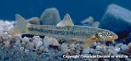

Image Credit: John Woodling, CDOW
|
|
|
Family: Cyprinidae - Minnows |
|  |
|
AFR=7, BR=, DFR=8, LLS=58-76 PC= PT=2,4-4,2; 1,4-4,1; 1,4-4,0 |
| adults small; small barbel at corner of mouth; subterminal mouth; small eye; no groove between premaxillary and snout (frenum present) |
| Sport Fish: No Prohibited: Not Known Origin: Native Status: |
|
Image Credit: John Woodling, CDOW |
|
|